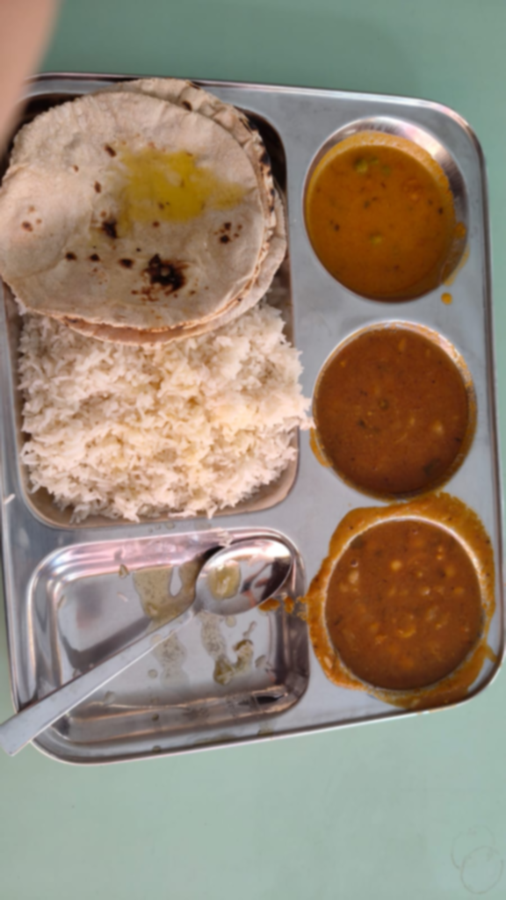
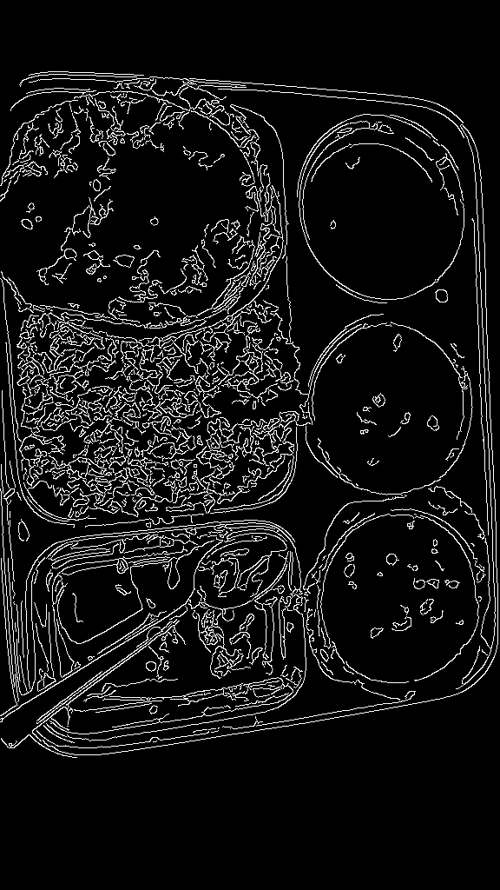
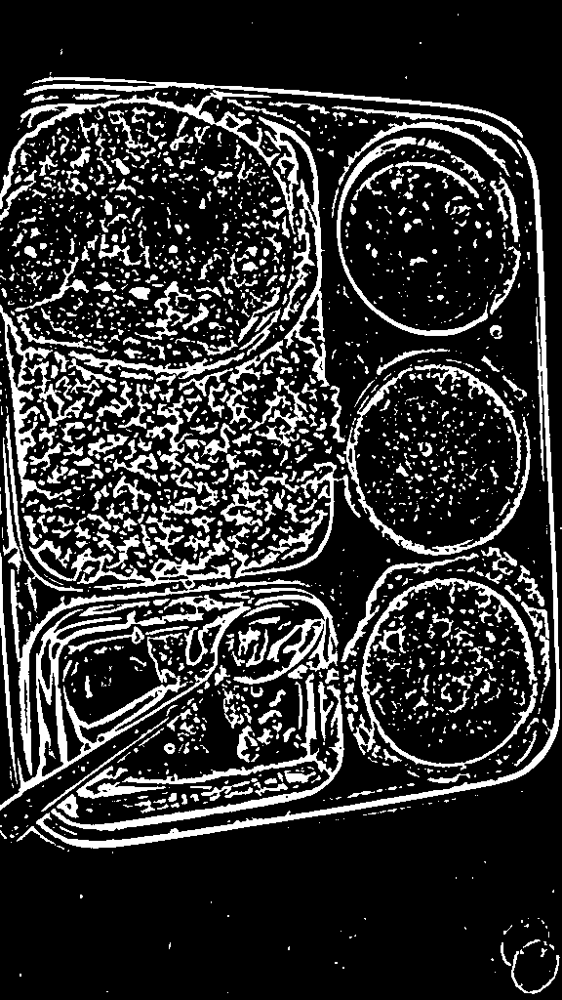
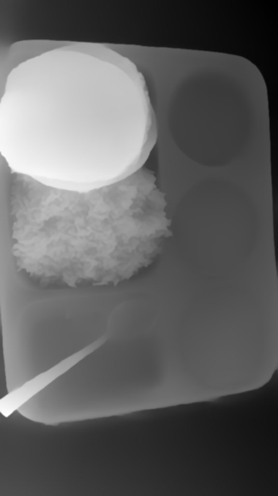
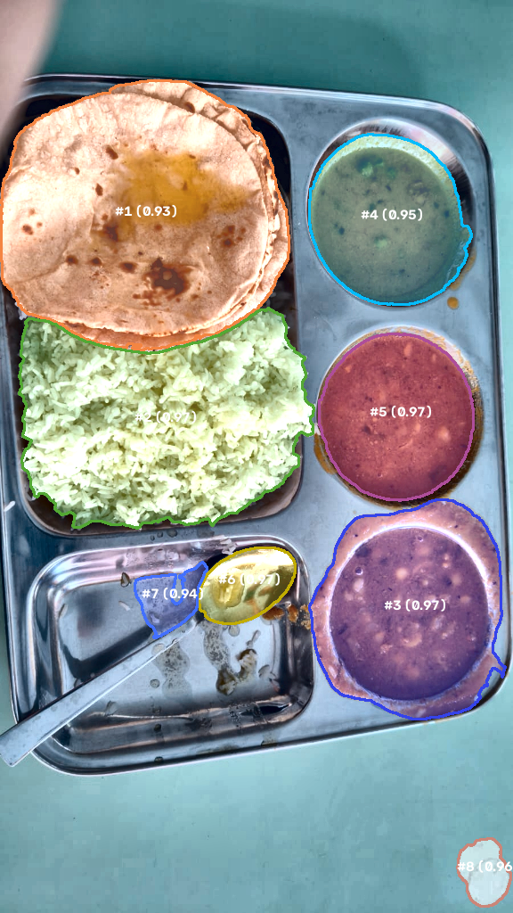
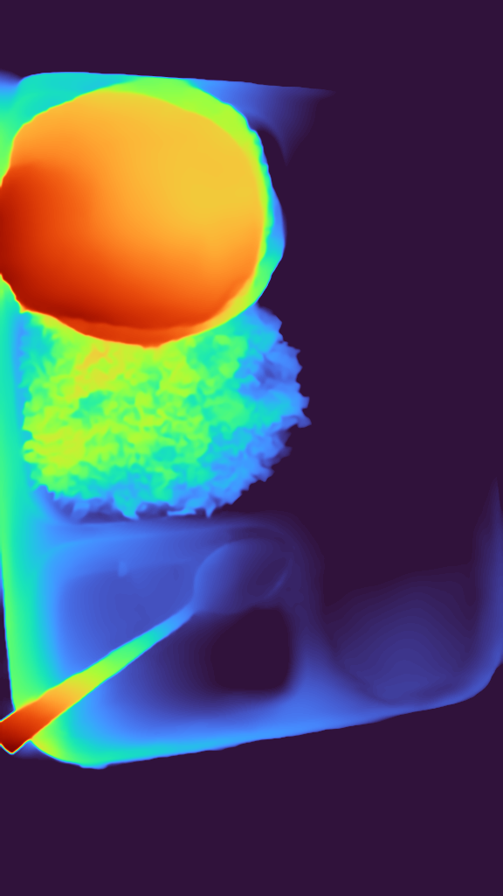
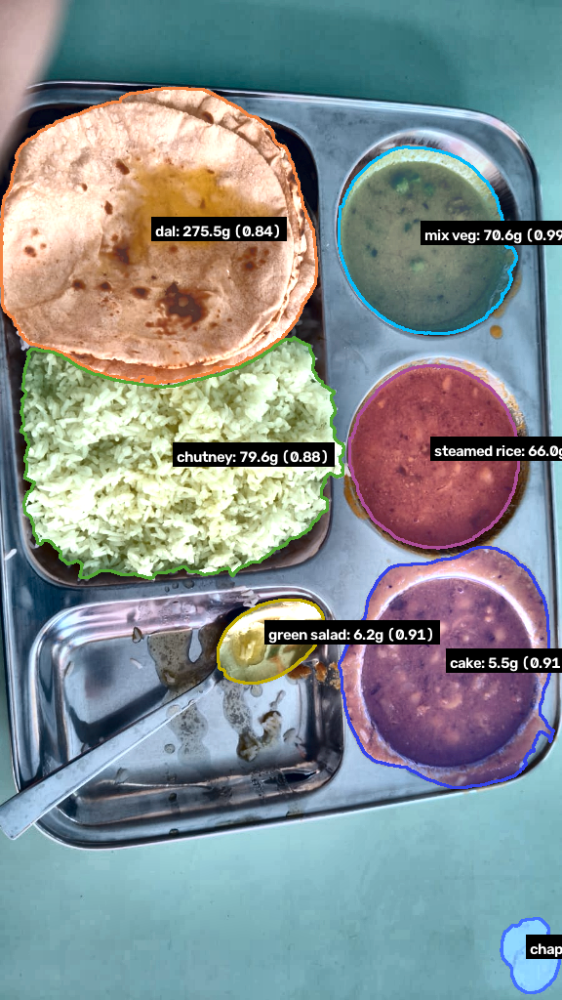

{
"resolution": "900x1600",
"channels": 3,
"dtype": "uint8",
"expected_items": [
"chapati",
"green salad",
"mix veg",
"steamed rice",
"cake",
"chutney",
"dal"
],
"plate_profile": null,
"debug": true
}











[]
{
"item_id": "dal_1",
"area_pixels": 78321,
"estimated_height_cm": 2.807,
"volume_estimate_ml": 243.8,
"density": 1.1300000000000001,
"mass_g": 275.5,
"class_label": "dal",
"class_confidence": 0.5332,
"depth_stability": 1.0,
"scale_confidence": 1.0,
"composite_confidence": 0.8393,
"prior_applied": true
}{
"item_id": "chutney_2",
"area_pixels": 61967,
"estimated_height_cm": 1.103,
"volume_estimate_ml": 75.8,
"density": 1.05,
"mass_g": 79.6,
"class_label": "chutney",
"class_confidence": 0.6209,
"depth_stability": 1.0,
"scale_confidence": 1.0,
"composite_confidence": 0.8819,
"prior_applied": true
}{
"item_id": "cake_3",
"area_pixels": 42203,
"estimated_height_cm": 0.117,
"volume_estimate_ml": 5.5,
"density": 1.0,
"mass_g": 5.5,
"class_label": "dal",
"class_confidence": 0.9625,
"depth_stability": 0.75,
"scale_confidence": 1.0,
"composite_confidence": 0.9147,
"prior_applied": false
}{
"item_id": "mix veg_4",
"area_pixels": 26797,
"estimated_height_cm": 2.375,
"volume_estimate_ml": 70.6,
"density": 1.0,
"mass_g": 70.6,
"class_label": "dal",
"class_confidence": 0.9901,
"depth_stability": 1.0,
"scale_confidence": 1.0,
"composite_confidence": 0.9852,
"prior_applied": true
}{
"item_id": "steamed rice_5",
"area_pixels": 25430,
"estimated_height_cm": 1.95,
"volume_estimate_ml": 55.0,
"density": 1.2000000000000002,
"mass_g": 66.0,
"class_label": "dal",
"class_confidence": 0.97,
"depth_stability": 1.0,
"scale_confidence": 1.0,
"composite_confidence": 0.9859,
"prior_applied": true
}{
"item_id": "green salad_6",
"area_pixels": 6826,
"estimated_height_cm": 1.373,
"volume_estimate_ml": 10.4,
"density": 0.6,
"mass_g": 6.2,
"class_label": "chutney",
"class_confidence": 0.7221,
"depth_stability": 1.0,
"scale_confidence": 1.0,
"composite_confidence": 0.9148,
"prior_applied": true
}{
"item_id": "chapati_7",
"area_pixels": 3348,
"estimated_height_cm": 0.565,
"volume_estimate_ml": 2.1,
"density": 0.85,
"mass_g": 1.8,
"class_label": "dal",
"class_confidence": 0.7852,
"depth_stability": 1.0,
"scale_confidence": 1.0,
"composite_confidence": 0.9327,
"prior_applied": true
}

{
"food_items": [
{
"name": "dal",
"volume_ml": 243.8,
"mass_g": 275.5,
"calories": 234.2,
"protein": 15.2,
"carbs": 33.1,
"fat": 5.5,
"confidence": 0.8393,
"class_label": "dal",
"class_confidence": 0.5332
},
{
"name": "chutney",
"volume_ml": 75.8,
"mass_g": 79.6,
"calories": 79.6,
"protein": 1.6,
"carbs": 11.9,
"fat": 3.2,
"confidence": 0.8819,
"class_label": "chutney",
"class_confidence": 0.6209
},
{
"name": "cake",
"volume_ml": 5.5,
"mass_g": 5.5,
"calories": 5.5,
"protein": 0.2,
"carbs": 0.8,
"fat": 0.2,
"confidence": 0.9147,
"class_label": "dal",
"class_confidence": 0.9625
},
{
"name": "mix veg",
"volume_ml": 70.6,
"mass_g": 70.6,
"calories": 70.6,
"protein": 2.1,
"carbs": 10.6,
"fat": 2.1,
"confidence": 0.9852,
"class_label": "dal",
"class_confidence": 0.9901
},
{
"name": "steamed rice",
"volume_ml": 55.0,
"mass_g": 66.0,
"calories": 85.8,
"protein": 1.8,
"carbs": 18.5,
"fat": 0.2,
"confidence": 0.9859,
"class_label": "dal",
"class_confidence": 0.97
},
{
"name": "green salad",
"volume_ml": 10.4,
"mass_g": 6.2,
"calories": 1.6,
"protein": 0.1,
"carbs": 0.3,
"fat": 0.0,
"confidence": 0.9148,
"class_label": "chutney",
"class_confidence": 0.7221
},
{
"name": "chapati",
"volume_ml": 2.1,
"mass_g": 1.8,
"calories": 4.6,
"protein": 0.1,
"carbs": 0.9,
"fat": 0.1,
"confidence": 0.9327,
"class_label": "dal",
"class_confidence": 0.7852
}
],
"confidence": 0.9221
}[
{
"step": "Input",
"message": "Original image saved",
"params": {
"resolution": "900x1600"
},
"elapsed_s": 0.0932,
"input_file": null,
"output_file": "original.png",
"timestamp": "2026-09-13T15:28:24.825926"
},
{
"step": "Pipeline",
"message": "Step 1 — Preprocessing & Perspective Warp",
"params": {},
"elapsed_s": null,
"input_file": null,
"output_file": null,
"timestamp": "2026-09-13T15:28:24.827606"
},
{
"step": "Quality Gate",
"message": "PASS",
"params": {
"blur_score": 132.45,
"tilt_deg": 34.0
},
"elapsed_s": null,
"input_file": null,
"output_file": null,
"timestamp": "2026-09-13T15:28:24.938186"
},
{
"step": "Preprocessing",
"message": "Resize applied",
"params": {
"original": "900x1600",
"target_long_edge": 1024,
"scale": 0.64
},
"elapsed_s": 0.0013,
"input_file": null,
"output_file": "01_resized.png",
"timestamp": "2026-09-13T15:28:24.980080"
},
{
"step": "Preprocessing",
"message": "Gaussian blur applied",
"params": {
"kernel": 5
},
"elapsed_s": 0.0012,
"input_file": null,
"output_file": "02_denoised.png",
"timestamp": "2026-09-13T15:28:25.025729"
},
{
"step": "Preprocessing",
"message": "LAB color normalization applied",
"params": {},
"elapsed_s": 0.0285,
"input_file": null,
"output_file": "03_color_normalized.png",
"timestamp": "2026-09-13T15:28:25.099094"
},
{
"step": "Preprocessing",
"message": "CLAHE contrast enhancement applied",
"params": {
"clip_limit": 2.0,
"tile_grid": "8x8"
},
"elapsed_s": 0.0105,
"input_file": null,
"output_file": "04_contrast_enhanced.png",
"timestamp": "2026-09-13T15:28:25.159248"
},
{
"step": "Preprocessing",
"message": "Canny edge detection",
"params": {
"low": 50,
"high": 150
},
"elapsed_s": 0.| Step | Message | Params | Time |
|---|---|---|---|
| Input | Original image saved | {"resolution": "900x1600"} | 0.0932s |
| Pipeline | Step 1 — Preprocessing & Perspective Warp | — | — |
| Quality Gate | PASS | {"blur_score": 132.45, "tilt_deg": 34.0} | — |
| Preprocessing | Resize applied | {"original": "900x1600", "target_long_edge": 1024, "scale": 0.64} | 0.0013s |
| Preprocessing | Gaussian blur applied | {"kernel": 5} | 0.0012s |
| Preprocessing | LAB color normalization applied | — | 0.0285s |
| Preprocessing | CLAHE contrast enhancement applied | {"clip_limit": 2.0, "tile_grid": "8x8"} | 0.0105s |
| Preprocessing | Canny edge detection | {"low": 50, "high": 150} | 0.0185s |
| Preprocessing | Warp skipped (no 4-pt contour) | {"warped": false} | — |
| Preprocessing | Complete | {"output_size": "576x1024"} | 0.4101s |
| Pipeline | Step 2 — Compartments & Scale | — | — |
| Compartment Detection | Detected 0 compartments | {"min_area_frac": 0.02, "max_area_frac": 0.9, "compartment_count": 0} | 0.0130s |
| Scale Calibration | Ellipse-based calibration succeeded | {"cm_per_pixel": 0.03331, "method": "ellipse"} | — |
| Compartment Detection | Scale computed | {"cm_per_pixel": 0.03331, "pixel_area_cm2": 0.00110925, "compartments": 0, "scale_confidence": 1.0} | 0.0923s |
| Pipeline | Step 3 — Depth Estimation | — | — |
| Depth Estimation | Depth Anything depth map computed (smoothed) | {"device": "-1", "shape": [1024, 576], "min": 0.203, "max": 5.202} | 3.7388s |
| Depth Normalization | Baseline subtracted from depth | {"baseline": 1.869} | 0.0064s |
| Depth Normalised [0-1] | Relative depth map normalised to [0,1] | {"cm_per_pixel": 0.03331, "image_width_px": 576, "max_raw_val": 3.3326} | 0.0031s |
| Depth Estimation | Complete | — | 3.8486s |
| Pipeline | Step 4 — Segmentation | — | — |
| Segmentation | 8 food items segmented | {"method": "FullSAM", "total_candidates": 29, "rejected": 21, "accepted": 8} | 80.6788s |
| Segmentation | 8 food items found | — | 80.8016s |
| Pipeline | Step 5 — Food Classification (OCR-constrained) | — | — |
| Classification | Complete | {"n_items": 8, "ocr_labels_used": true} | 0.1393s |
| Pipeline | Step 6 — Hungarian Label Assignment | — | — |
| Pipeline | Step 7 — Volume & Mass Estimation | — | — |
| Volume Estimation | Computed mass for 7 items | {"total_items": 7} | 0.0345s |
| Pipeline | ✅ Pipeline complete | {"total_food_items": 7, "avg_confidence": 0.9221, "scale_method": "ellipse"} | 85.5342s |